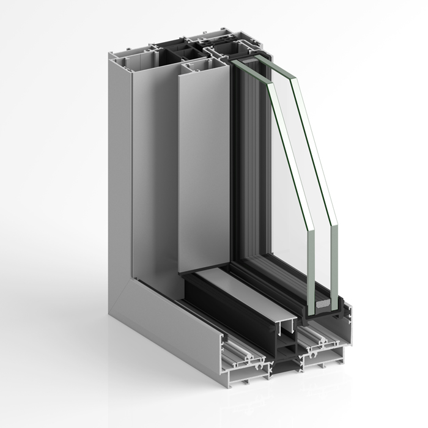
CoulissantSTRUGAL
↗S140RP INFINITY
Des profils discrets pour ouvrir les perspectives.
- Nœud central
- 25 mm
- Cadre
- 137 mm
De l’enveloppe du bâtiment aux détails de l’aménagement intérieur. Explorez les familles STRUGAL et trouvez le système adapté à votre projet.
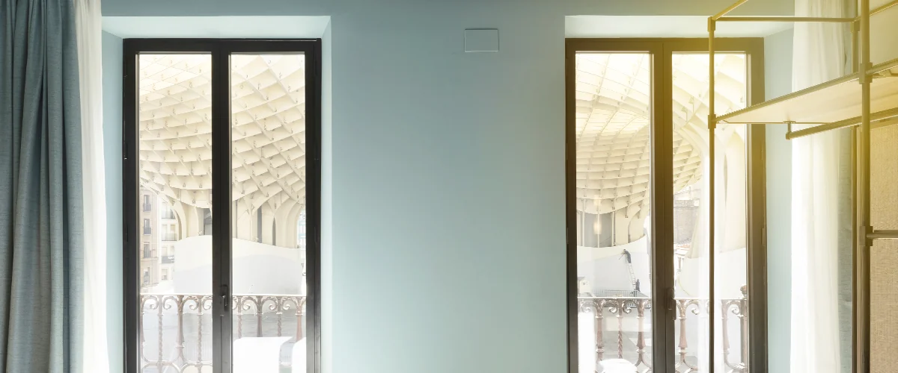
Ouvertures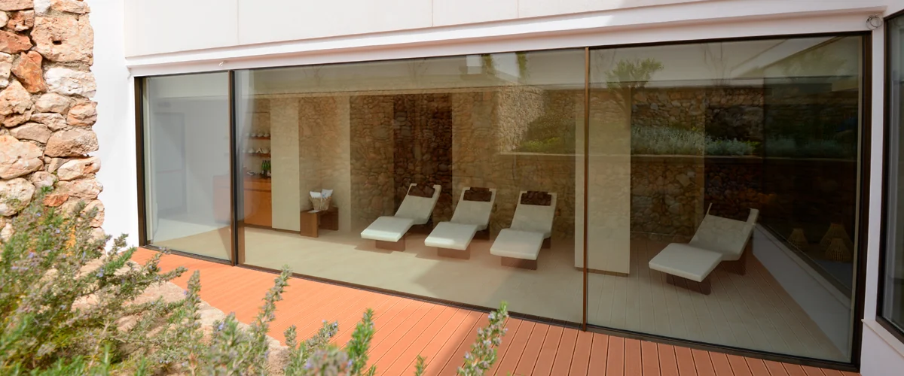
Ouvertures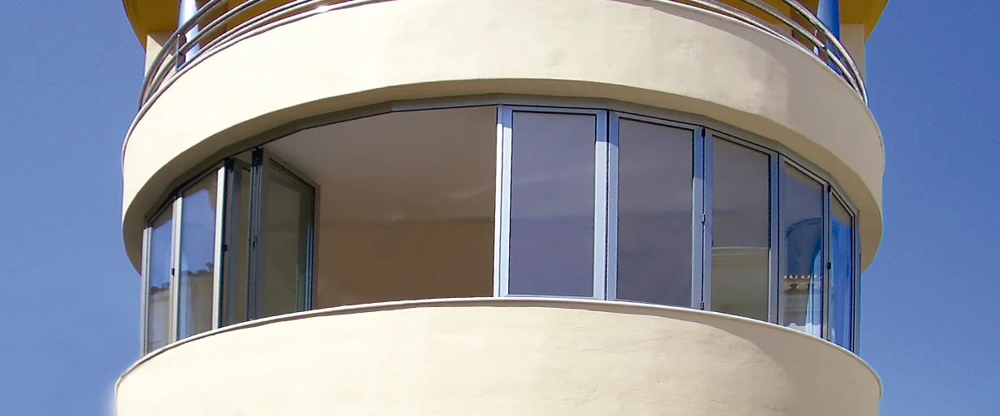
Ouvertures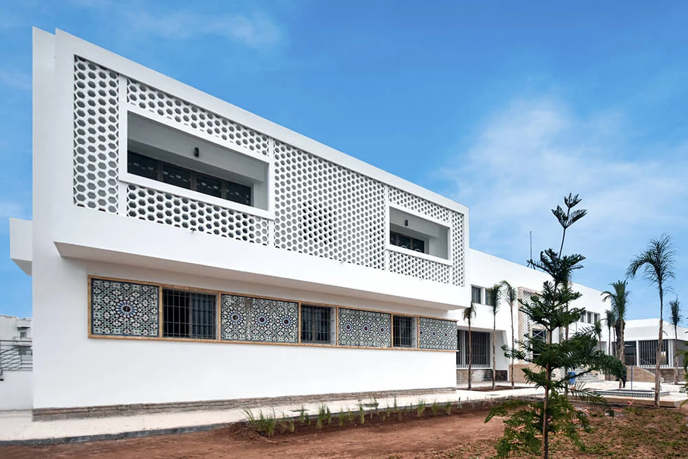
Enveloppe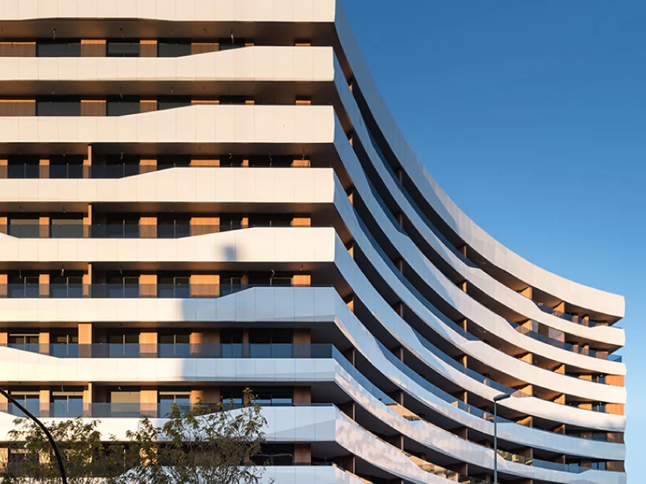
Enveloppe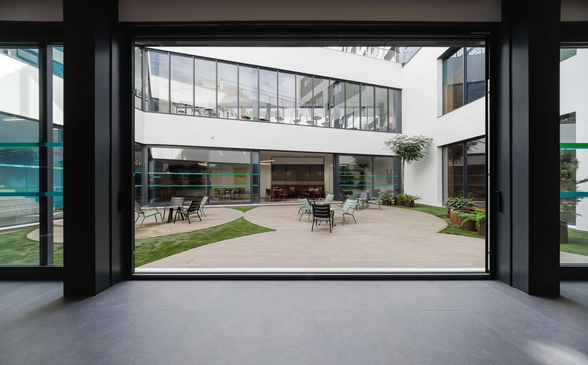
Intérieurs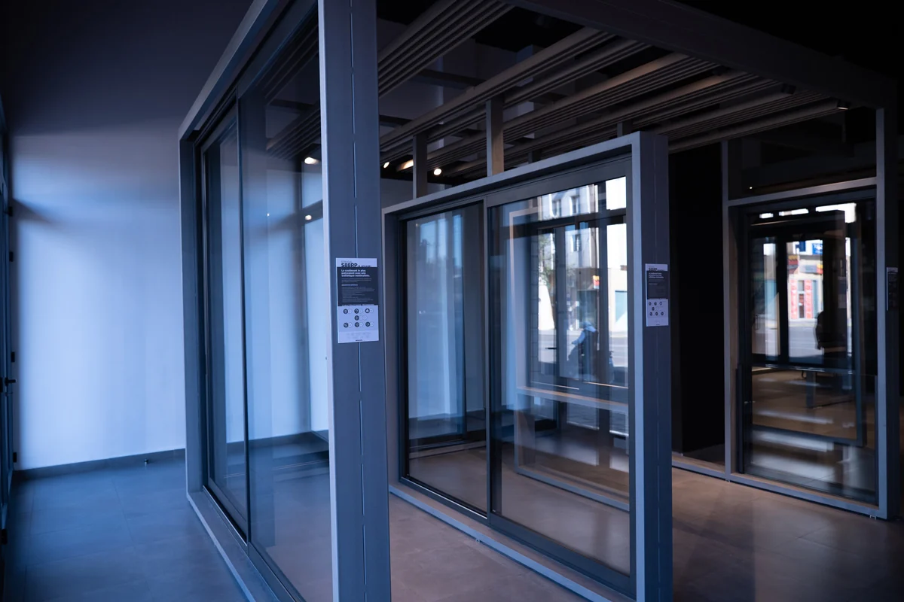
Ouvertures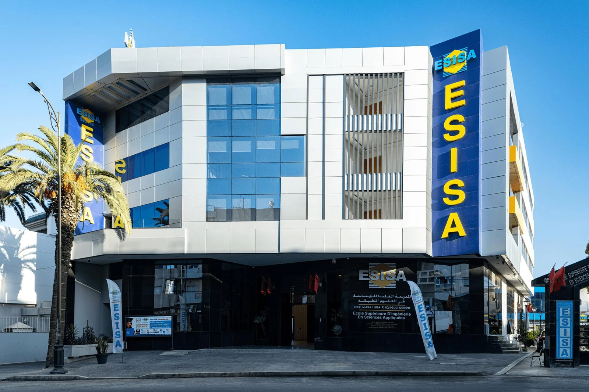
Enveloppe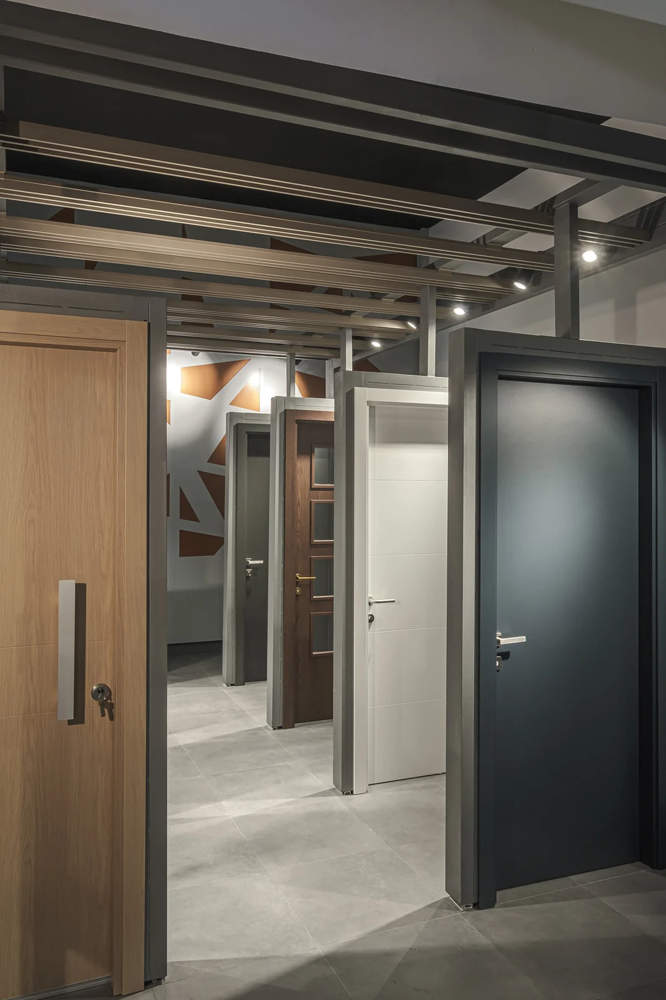
Intérieurs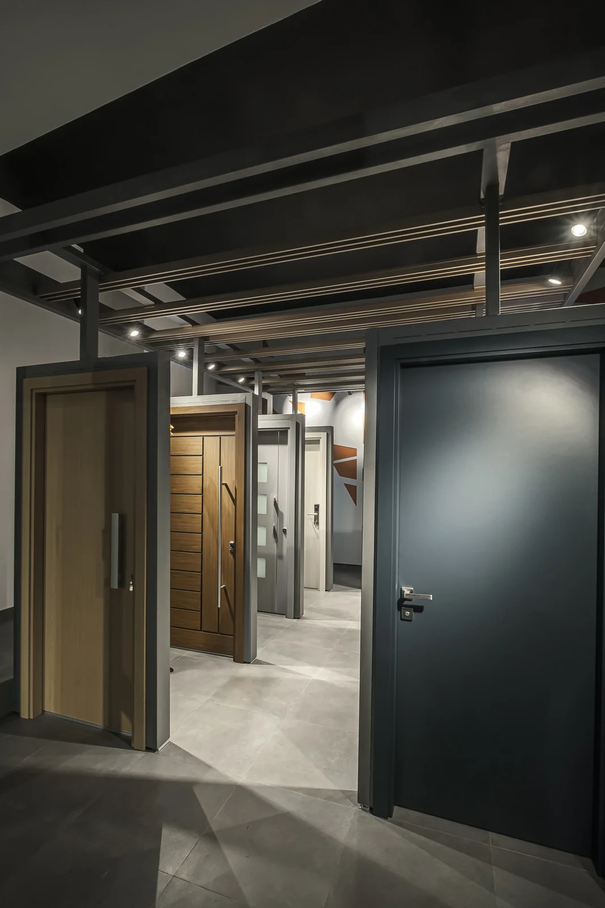
Ouvertures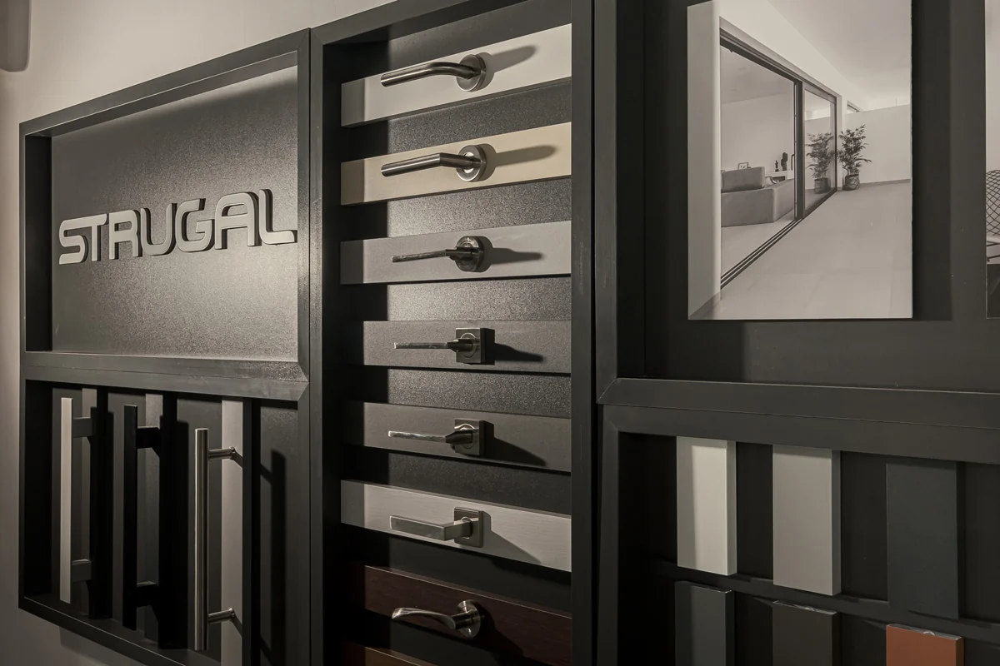
Intérieurs12 familles de produits
Également dans la gamme : profils complémentaires, ferrures et accessoires↗
CoulissantDes profils discrets pour ouvrir les perspectives.
 Coulissant
CoulissantUne baie minimaliste pour les grandes ouvertures.
 Coulissant
CoulissantPlusieurs modes d’ouverture dans une même gamme.
 Frappe
FrappeUn cadre de 82 mm pour les projets exigeants.
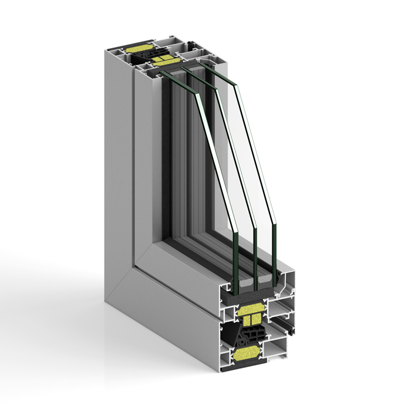
FrappeUn cadre de 74 mm, à ouvrant apparent ou caché.
 Frappe
FrappeUne solution à frappe aux cadres de 53 ou 60 mm.
6 gammes à explorer
Un premier repère pour préparer votre échange avec le bureau technique.
| Système | Ouverture | Repère technique | À étudier pour |
|---|---|---|---|
| S140RP INFINITY | Coulissant | Nœud central : 25 mm | Pour privilégier la transparence et des lignes minimales. |
| S160RP HORIZON | Coulissant | Hauteur : Jusqu’à 4 m | Pour étudier de grands espaces vitrés avec le bureau technique. |
| S88RP | Coulissant | Montant central : 34 mm | Pour comparer coulissant classique, levant et galandage. |
| S82RP | Frappe | Cadre : 82 mm | Pour étudier une menuiserie à frappe avec isolation renforcée. |
| S74RP | Frappe | Cadre : 74 mm | Pour concilier lignes droites et choix de configurations. |
| S53RP+ | Frappe | Cadre : 53 / 60 mm | Pour étudier fenêtres et portes à lignes droites. |
Les performances et possibilités varient selon la configuration. Consultez les fiches techniques et faites valider votre projet.